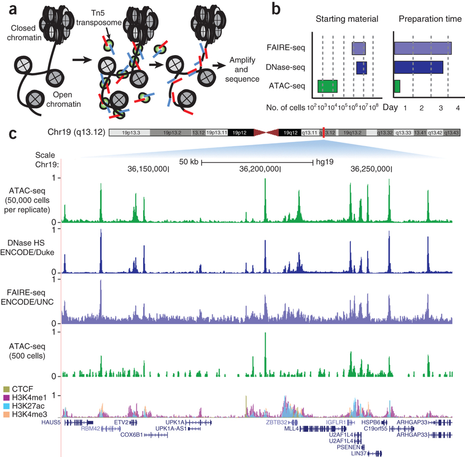
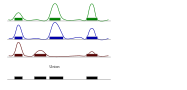
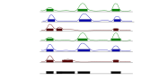
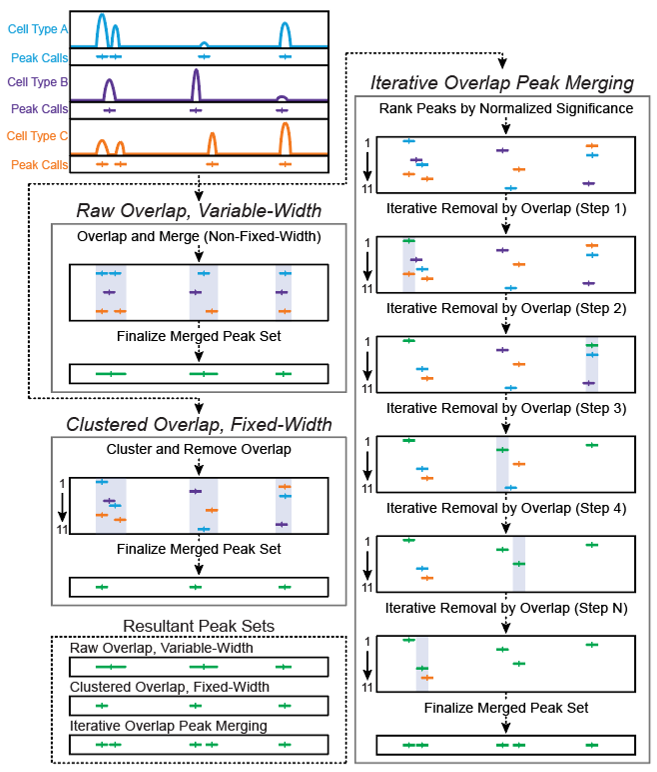

### {{ page.title }}
---
### Chromatin accessibility
---
### DNase hypersensitivity
---
### ATAC-seq experiment

---
### Transposase biology
---
### ChIP-seq vs ATAC-seq
#### ChIP-seq
- uses an antibody
- selects a specific factor
#### ATAC-seq
- no antibody
- all factors
---
### Review of basic algorithm for sequence-based genome data
flowchart LR
Sequences --> Alignment --> Counting --> x[Peak calling] --> Summary
---
### Biological questions for chromatin analysis
- How does the chromatin state change as a cell differentiates?
- What genome regions are used specifically by cell type $x$?
How can we compare samples?
---
## Normalization
> Transforming data so as to make them more comparable
1. Normalizing to an independent reference.
2. Normalizing two or more datasets to each other.
---
## Normalization approaches
- Mapping/projection
- Trimming, Clip functions
- Scaling (log, z-score, quantile, minmax)
- Filtering
---
### How can you compare two samples?
Potential issues:
1. Peak locations differ across samples
2. Sequencing depth differs
3. Sequences are relative to the available pool
4. CNVs, repeats, NuMts, and other artifacts
---
### Problem 1
Peak locations differ across samples
Possible solution: Consensus peaks
---
### Consensus peaks 1: Union
Simply merge all the peaks into one.

---
But this leads to problems with lots of samples, or when samples vary significantly.

---
### Consensus peaks 2: Union-tile
You could do the union approach, and then do a sliding window
---
### Consensus peaks 3: Algorithm

---
### Problem 2: Sequencing depth
 ---
- RPKM: Reads per Kilobase per Million reads
- FPKM: Fragments per Kilobase per Million reads
---
---
### Problem 3: Sequencing depth
Clip functions
$ x = min(x, quantile(x, 0.99)) $
```R
capAndScale = function(x):
cap = quantile(x, 0.99)
x[x>cap] = cap
return x/cap
---
# Quantile normalization
- Goal: to make values comparable to one another
- Assumes that the distributions between the samples should be the same.
It forces the distributions to look identical
---
## Q-Q plots
- Base case: used to visualize the normality of a dataset
- It compares the observed values against the theoretical distribution.
- Can also be used to compare two datasets to each other.
---
- RPKM: Reads per Kilobase per Million reads
- FPKM: Fragments per Kilobase per Million reads
---
---
### Problem 3: Sequencing depth
Clip functions
$ x = min(x, quantile(x, 0.99)) $
```R
capAndScale = function(x):
cap = quantile(x, 0.99)
x[x>cap] = cap
return x/cap
---
# Quantile normalization
- Goal: to make values comparable to one another
- Assumes that the distributions between the samples should be the same.
It forces the distributions to look identical
---
## Q-Q plots
- Base case: used to visualize the normality of a dataset
- It compares the observed values against the theoretical distribution.
- Can also be used to compare two datasets to each other.